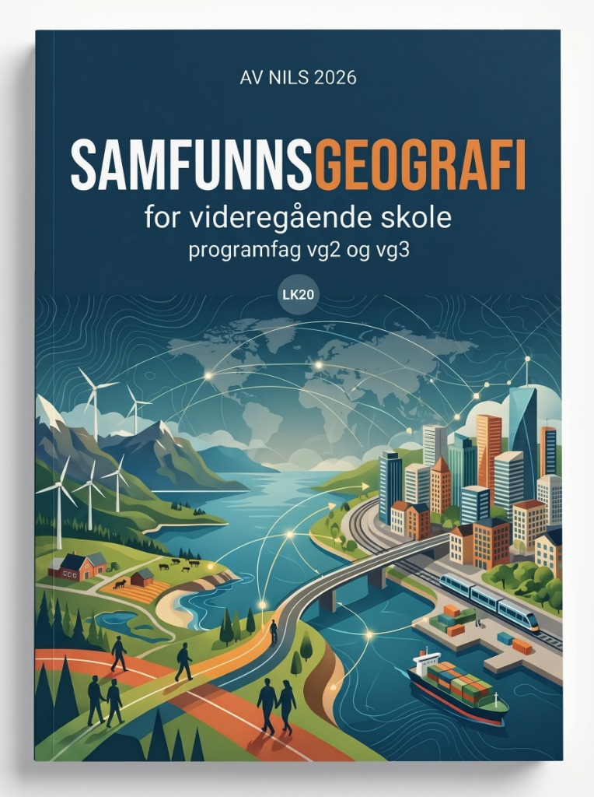

Velkommen til Samfunnsgeografi
Dette er din digitale læringsplattform i samfunnsgeografi. Her utforsker du sammenhenger mellom mennesker, urfolksrettigheter, naturressurser, energi og bærekraftig utvikling – både globalt og lokalt i Norge.
Slik bruker du boken:
Velg kapittel i menyen til venstre: Klikk på et kapittel for å lese i klassisk bokvisning med begrepsforklaringer, kart, kilder og oppgaver.
Bytt visningsmåte med Kunnskapstreet: Ønsker du å se hvordan temaer og konflikter henger sammen på tvers? Klikk på Kunnskapstreet i menyen (eller knappen under) for en visuell og interaktiv oversikt.
Kapitler i boken
4 kapitler tilgjengeligUrfolk
Hva kjennetegner urfolk, kolonisering, assimilering, ILO-konvensjon 169 og dagens arealkonflikter.
Norges urfolk
Sápmi, samiske språk, fornorskingspolitikk, Alta-aksjonen, Sametinget, Fosen-dommen og reindrift.
Ressurser og muligheter
Norges vannkraft- og fossilparadoks, Grenland, kritiske mineraler (Fensfeltet) og bærekraftig forvaltning.
Velstand
4.1 Hvorfor er vi rike i Norge? Arbeidsproduktivitet, britisk industri, vannkraft og Grenlands industrihistorie.